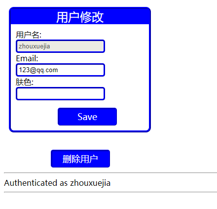

一、users_model.js 功能:定义用户对象模型
var mongoose=require('mongoose'),
Schema=mongoose.Schema;
var UserSchema=new Schema({
username:{type:String,unique:true},
email:String,
color:String,
hashed_password:String
});
mongoose.model('User',UserSchema);二、users_controller.js 功能:为Express服务器实现删除用户路由
var crypto=require('crypto');
var mongoose=require('mongoose'),User=mongoose.model('User');
function hashPW(pwd){
return crypto.createHash('sha256').update(pwd).
digest('base64').toString();
}
//实现删除用户路由
exports.deleteUser=function(req,res){
User.findOne({_id:req.session.user})
.exec(function(err,user){
if(user){
user.remove(function(err){
if(err){
req.session.msg=err;
}
req.session.destroy(function(){
res.redirect('/login');
});
});
}else{
req.session.msg="User Not Found!";
req.session.destroy(function(){
res.redirect('/login');
});
}
});
};三、user.html
<!DOCTYPE html>
<html ng-app="myApp">
<head>
<meta charset="UTF-8">
<title>用户修改</title>
<link rel="stylesheet"type="text/css" href="/static/css/styles.css" />
<script src="https://cdn.staticfile.org/angular.js/1.5.8/angular.min.js"></script>
<script src="/static/js/my_app.js"></script>
</head>
<body>
<div class="form-container" ng-controller="myController">
<p class="form-header">用户修改</p>
<form method="POST" action="/user/update">
<label>用户名:</label>
<input type="text" name="username" ng-model="user.username" disabled><br>
<label>Email:</label>
<input type="email" name="email" ng-model="user.email"><br>
<label>肤色:</label>
<input type="text" name="color" ng-model="user.color"><br>
<input type="submit" value="Save">
</form>
</div>
<form method="POST" action="/user/delete">
<input type="submit" value="删除用户">
</form>
<hr><%=msg%>
<hr>{{error}}
</body>
</html>四、routes.js 功能:为Express服务器实现处理Web请求路由
var crypto=require('crypto');
var express=require('express');
module.exports=function(app){
var users=require('./controllers/users_controller');
app.use('/static',express.static('./static')).
use('/lib',express.static('../lib')
);
app.post('/user/delete',users.deleteUser);五、页面显示效果
